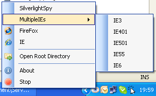

ServerLight is a user friendly version of WebDev.WebHost.exe webserver.

To use ServerLight 0.1, just copy Serverlight.exe in your WebSite Directory.
ServerLight.exe.config file is optional.
Use Cases :
- Deployment scenario. Use Serverlight before deployment to check everything ok.
- Development process : Run Website with all installed browser on your machine (IE, FireFox, MultipleIEs are autodetected)
- Sharing : Mail your small website with ServerLight in a compressed file.
- Demo : Just run Serverlight without having to open Visual Studio or Blend.
Hope this help!
Max.